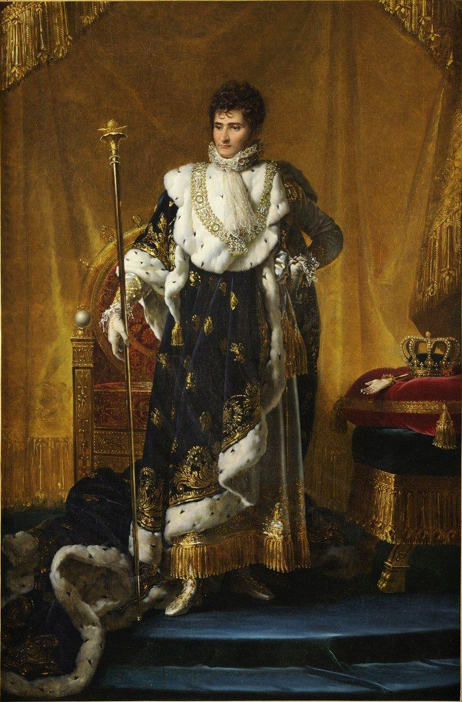
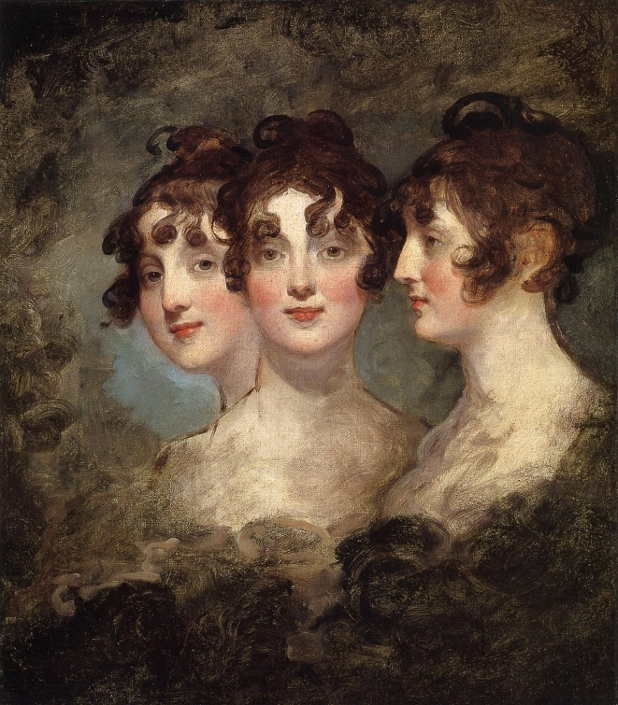
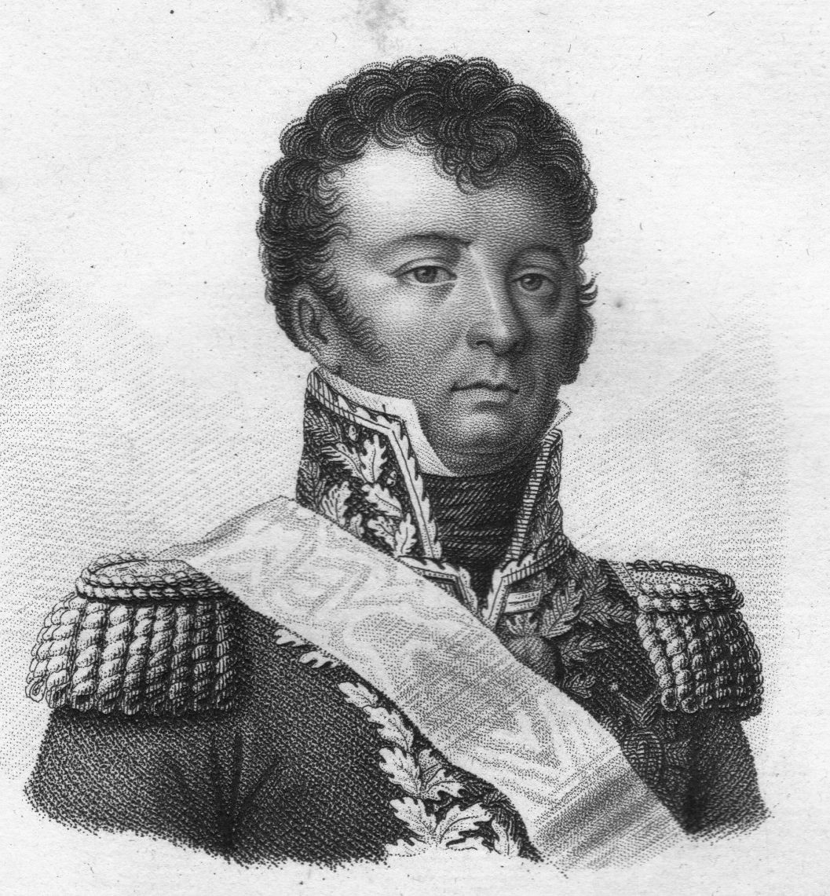

제롬 이야기 - 나폴레옹의 일시적 실수 ? 본질적 문제 !
게시: 2019-12-16T06:30:11+09:00
제롬 보나파르트(Jérôme-Napoléon Bonaparte)는 1784년 생으로서 나폴레옹에게는 15살 어린 정말 아들 같은 막내 동생이었습니다. 나폴레옹이 1793년 툴롱(Toulon) 포위전을 통해 중위에서 장군까지 일사천리의 승진 가도를 달리면서 일약 스타로 떠올랐을 때, 그의 나이는 고작 9살이었습니다. 이 툴롱 포위전이 한창일 때만 해도 보나파르트 일가는 고향 코르시카에서 쫓겨나 집도 절도 없이 마르세이유의 월세방을 전전하던 신세였지만 나폴레옹의 출세 덕분에 그 이후로는 생활에 기름칠이 잘 된 편이었습니다. 즉, 제롬은 형의 후광에 힘입어 아주 어릴 때 빼고는 그다지 세상살이가 어려운 줄 모르고 자라났다는 이야기지요.

(베스트팔렌 국왕 제롬 보나파르트 전하이십니다. 가만히 보면 이목구비가 확실히 나폴레옹의 동생처럼 생겼네요.) 그는 역시 위대한 형을 배경으로 해서 프랑스 해군에 이름만 올려놓고 경력을 쌓다가, 청소년 시기에 미국으로 건너가 자유로운 미국 물을 먹게 되었습니다. 조기 미국 유학이 적어도 제롬에게는 그다지 좋은 영향을 주지 못했는지, 1803년 당시 19살이던 제롬은 부유한 가문의 18살짜리 미국 아가씨 엘리자베스 '벳시' 패터슨(Elizabeth "Betsy" Patterson)을 만나 사랑에 빠졌고 자기 마음대로 결혼까지 해버렸습니다. 당시만 해도 프랑스에서는 상상하기 어려운 일이었지요. 이미 프랑스에서 절대 권력자의 위치를 공고히 했던 나폴레옹은 노발대발했습니다. 카톨릭에서는 이혼이 쉽지 않은 지라, 나폴레옹은 애꿎은 교황 비오 7세(Pius VII)를 윽박질러 미국에 있는 제롬의 결혼을 무효화 하려 애썼으나 고지식한 비오 7세가 굽히지 않자 황제로 즉위한 다음 해인 1805년 3월에 칙령을 내려 자기 멋대로 동생의 결혼을 무효화 시켜버렸습니다. 마침 그때 제롬은 프랑스 황제가 된 형에게 이 결혼을 인정 받겠다고 당시 임신 중이던 와이프 벳시를 데리고 유럽행 항해길에 올라 있었습니다. 당시 중립국이던 포르투갈에 상륙한 제롬이 먼저 형을 만나 설득을 시도하는 동안, 그 벳시는 네덜란드 암스테르담에 입항하려고 했습니다. 이것도 나름 이유가 있었는데, 어떻게든 빨리 프랑스 땅에 들어가서 아이를 낳고 싶었던 것입니다. 그러나 그를 막으려는 비정한 형 나폴레옹은 아예 그 미국 선박의 암스테르담 입항을 금지해버렸습니다. 결국 벳시는 적국인 영국으로 발길을 돌려야 했고, 제롬의 첫아들은 영국 땅에서 태어나게 되었습니다. 이 아이는 제롬 나폴레옹 보나파르트(Jérôme Napoléon Bonaparte)라는 으리으리한 이름을 갖게 되었지만 결국 어머니와 함께 미국으로 돌아가 부유한 미국 지주가 되었습니다. 결국 제롬도 지엄한 형의 명령에 굴복하여 이혼을 받아들이게 되었는데, 모르긴 해도 이때부터 형에 대해 그다지 좋지 않은 감정을 가지게 되었을 것 같습니다.

(제롬 보나파르트를 사로잡았던 미국 아가씨 엘리자베스 '벳시' 패터슨입니다. 1804년에 그려진 것이니 19살 때의 모습이네요.) 그래도 자신의 여자를 버리고 형을 따른 대가는 짭짤했습니다. 뷔르템베르크(Württemberg)의 공주님 카타리나(Catharina Frederica)를 새신부로 맞이할 수 있었을 뿐만 아니라 자기 자신도 왕이 되었거든요. 1806년 프로이센을 격파한 나폴레옹은 다음해인 1807년 프로이센으로부터 빼앗은 영토와 이런저런 독일 소공국들을 모아 베스트팔렌(Westphalen) 왕국을 새로 만들었고, 그 왕으로는 제롬을 임명했던 것입니다. 나폴레옹은 새로 왕이 된 막내 동생 제롬에게 선물로 매우 모범적인 헌법과 근대적인 관료 체계를 내려주며 베스트팔렌 왕국이 자신이 유럽에 제시할 새 질서의 모범이 되기를 바랬습니다만, 제롬의 생각은 달랐습니다. 제롬은 자기 여자를 버리고 얻은 왕국이라서 그랬는지 아니면 어려운 것 모르고 커서 그랬는지 아무튼 다소 흥청망청 돈을 써대며 겉멋을 부리는 왕이 되었던 것입니다. 베스트팔렌 왕국의 수도는 카셀(Kassel)이었는데, 제롬이 국왕으로서 위풍당당하게 입성한 카셀은 원래 작은 도시에 불과했을 뿐만 아니라 프랑스군이 휩쓸고 간 모든 곳이 그랬듯이 역시 탈탈 약탈을 당한 뒤라서 꽤 황폐해진 상태였습니다. 제롬은 패전 직후 새로운 왕국으로 편성된 영토의 흉흉한 민심을 보살필 생각보다는 이 보잘 것 없는 자신의 왕궁을 멋지게 꾸며 보겠다는 의욕이 앞섰습니다. 그는 기존의 빌헬름궁(Wilhelmshöhe)을 나폴레옹궁(Napoleonshöhe)으로 개명하고 이런저런 개보수 공사와 화려한 은식기 사치스러운 가구 값비싼 그림 등을 주문하며 바쁘게 지냈습니다. 덕분에 그 일대의 예술가들과 장인들은 때 아닌 호황을 맞이했지만 신생 베스트팔렌 왕국은 곧장 재정난으로 빠져 들었습니다. 나폴레옹의 튈르리 궁전과 비슷한 규모의 비용을 제롬이 써댔으니까요. 돈이 떨어지자 여태까지 해오던 것처럼 제롬은 형에게 손을 벌렸지만 동생의 철없는 방탕질에 화가 난 나폴레옹은 그 요청을 단칼에 거절했고, 그렇잖아도 빗나가기 시작한 형제 사이는 더욱 비틀어졌습니다. 하지만 나폴레옹은 여전히 막내 동생 제롬을 사랑했습니다. 그는 1812년 러시아 원정을 시작하면서 진지하게 폴란드 왕국의 재건을 염두에 두기 시작했는데, 당장 떠오른 문제는 누구를 폴란드 왕으로 삼느냐 하는 것이었습니다. 나폴레옹은 그 적임자로 오랫동안 그 지역에서 활동했고 또 폴란드인들로부터 좋은 평가를 받고 있던 다부 원수를 고려했습니다. 그러나 스웨덴의 왕세자가 되자마자 나폴레옹에게 등을 돌려버린 베르나도트의 경우를 보고, 나폴레옹은 역시 누가 뭐래도 믿을 것은 핏줄 밖에 없다는 생각을 하게 되었습니다. 그래서 만약 폴란드 왕국을 재건한다면 그 왕으로는 제롬을 생각했던 것이지요. 나중에 세인트 헬레나에서 유배생활을 하면서 회고록을 구술하던 나폴레옹은 그때서야 '생각해보면 폴란드 왕으로는 누구보다도 폴란드 왕족 출신이자 뛰어난 지휘관이었던 포니아토프스키(Józef Antoni Poniatowski)가 적입자였는데, 당시엔 그럴 생각이 전혀 떠오르지 않았다'라며 후회했습니다만, 아무튼 일이 그렇게 흘러갔습니다. 아무리 나폴레옹이라고 해도 혈기왕성한 폴란드인들 위에 자기 동생을 왕으로 세우자면 자기 동생에게 뭔가 그럴 싸한 공을 세우도록 해야 했습니다. 어차피 이제 곧 폴란드인들의 원수인 러시아로 쳐들어가는 마당에 고민할 필요도 없다고 생각한 나폴레옹은 카셀에서 왕놀이에 열중하고 있던 제롬을 소환하여 무려 3개 군단의 지휘권을 주며 왕이 되기에 부끄럽지 않은 뛰어난 전공을 세우도록 지시했습니다. 형의 소환을 받은 제롬은 베스트팔렌군을 이끌고 바르샤바에 화려하게 입성했습니다. 그는 나폴레옹의 동생을 구경하러 몰려든 폴란드인들에게 '폴란드를 러시아로부터 해방시키기 위해 피를 흘리겠다'라며 연설을 했으나, 정작 그의 거만하고 사치스러운 행동은 폴란드인들의 경멸과 증오만 불러 일으켰습니다. 나중에는 바르샤바의 폴란드인들 사이에서는 제롬에 대해 '매일 저녁마다 럼주와 우유로 목욕을 한다'라는 헛소문이 파다하게 퍼지기도 했습니다. 그가 끌고 온 베스트팔렌군은 당연히 독일인들로 구성된 부대였는데, 이들도 폴란드인들을 마구 대하며 폴란드인들의 원성을 샀습니다. 나폴레옹은 어쩌자고 그랬는지 몰라도 하필 제롬에게 방담(Dominique-Joseph René Vandamme) 장군을 실질적인 지휘관으로 붙여주었는데, 방담은 아우스테를리츠 전투에서 프라첸(Pratzen) 고지를 점령하는데 선봉을 서는 등 전투 지휘에는 무척 용감했지만 난폭한 성질머리와 함께 부끄러운 줄 모르는 약탈 행위로 악명이 자자한 인물이었습니다. 같은 프랑스 장군들 사이에서도 불화가 끊이지 않았던 방담은 제롬보다 더 폴란드인들의 원성을 살 뿐이었습니다. 훨씬 이전의 일이기는 합니다만, 오죽 했으면 나폴레옹이 방담의 면전에 대고 이렇게 말했겠습니까 ? "자네 문제를 해결하는 유일한 방법은 자네가 2명 있는 걸세. 그랬다면 방담 2명 중 1명에게 다른 방담을 교수형에 처하도록 했을 거야."

(방담입니다. 그는 1813년 쿨름(Kulm) 전투에서 연합군의 포로가 되었는데, 그는 짜르 알렉산드르 앞으로 압송되어 그의 약탈 행위에 대해 추궁을 당했습니다. 그러자 그는 대범하게도 알렉산드르에게 '최소한 나는 내 아버지를 죽였다는 소리는 듣지 않는다 !' 라고 외쳐 파벨 1세의 암살에 공모했다고 의심받던 알렉산드르의 안색을 변하게 했습니다. 그 때문인지 그는 포로 생활 당시 장군이라는 지위에도 불구하고 아주 가혹한 대접을 받으며 고생을 했다고 합니다.) 나폴레옹이 젊은 시절 오스트리아군과 프로이센군, 러시아군 등을 연파할 수 있었던 것은 물론 그의 천재성이 빛났기 떄문이기도 하지만, 그의 상대인 적군 지휘관들이 프랑스군처럼 실력이 아니라 신분에 의해 지휘권을 얻은 무능한 인간들이었다는 점도 크게 기여를 한 바 있습니다. 그런데 그의 제국의 운명이 달린 이 중요한 러시아 원정에, 그의 적들이 발목을 잡았던 바로 그 약점을 스스로 만들어서 달고 간 것은 정말 나폴레옹도 예전의 나폴레옹이 아니라는 것을 반증하는 것이었습니다. 물론 나폴레옹은 그가 믿고 쓰는 다부에게 '제롬을 잘 보필하라'라고 지시해두긴 했지만, 문제는 역시 제롬이었습니다. 이 철없는 28살짜리 청년 왕은 '내가 나폴레옹의 동생이자 3개 군단 지휘관인데 누구 명령을 따르라는 말이냐'라며 정말 자기가 엄청난 장군이라도 되는 것처럼 누구의 말도 따르려 하지 않았습니다. 누구를 탓하겠습니까 ? 이 모든 것이 막내 동생을 버르장머리 없이 키운 나폴레옹 본인의 책임이었습니다. 나폴레옹이 사태가 심각하다는 것을 체감한 것은 바그라티온의 제2군을 함정에 빠뜨린 뒤 그 포위망을 좁히는 작전에 제롬의 군대를 투입한 뒤에, 제롬으로부터 그 첫 보고서를 받아보았을 때였습니다. 거기에는 놀랍게도 군 작전 보고서에 당연히 있어야 할 내용들, 즉 적의 위치와 군세, 이동 방향 등에 대한 정보는 물론이고 심지어 아군의 위치와 상황에 대한 정보조차도 전혀 없었습니다. 그저 주절주절 두서 없이 쓴 보고서의 내용은 주로 제롬 본인이 겪고 있는 온갖 어려움에 대한 불평불만 뿐이었습니다. 나폴레옹은 직감했습니다. "망했다." 아니나 다를까, 제롬은 밤잠을 자지 않고 강행군해야 하는 상황에서도 '내가 왕인데 숙소가 이게 뭐냐' 따위의 불평불만과 투정만 일삼으며 전군의 추격 속도를 떨어뜨렸고, 결국 다부가 애써 가로 막은 바그라티온의 러시아 제2군을 제때 덮치지 못했습니다. 결국 바그라티온은 남쪽으로 탈출하는데 성공했고, 이때 탈출한 러시아군은 보로디노 전투를 사실상 무승부로 만드는데 큰 기여를 하며 나폴레옹의 러시아 원정을 수렁으로 몰아넣게 됩니다. 나폴레옹은 대노했습니다. 자기 동생이 그렇게 무능하리라고는 상상도 못했던 그는 다부에게 이제 제롬의 지휘권을 박탈하여 다부의 지휘권 아래 두라고 뒤늦게 명했습니다. 이렇게 껄끄러운 명령을 받은 다부는 무척 난처해하며 이 소식을 제롬에게 전했습니다. 아마 다부로서도 무능할 뿐만 아니라 부담만 되는 부하를 거느리게 된 것이 굉장히 난처했을 것입니다. 그런데 다부의 전언을 받은 제롬은 이 원정 내내 내린 결정 중 프랑스군을 위해 가장 큰 도움이 되는 결정을 내립니다. "내가 국왕인데 한낱 원수 따위의 지휘를 받으라는 말인가 ?"라며 벌컥 화를 내고는 직속 부하들을 거느리고 그냥 베스트팔렌 카셀로 돌아가버린 것입니다. 다부는 물론 아무도 제롬의 이탈을 아쉬워하지 않았고 비로소 한시름 덜었다고 생각했습니다. 하지만 이미 상황은 너무 악화된 뒤였습니다.
Source : 1812 Napoleon's Fatal March on Moscow by Adam Zamoyski https://en.wikipedia.org/wiki/J%C3%A9r%C3%B4me_Bonaparte https://en.wikipedia.org/wiki/Dominique_Vandamme